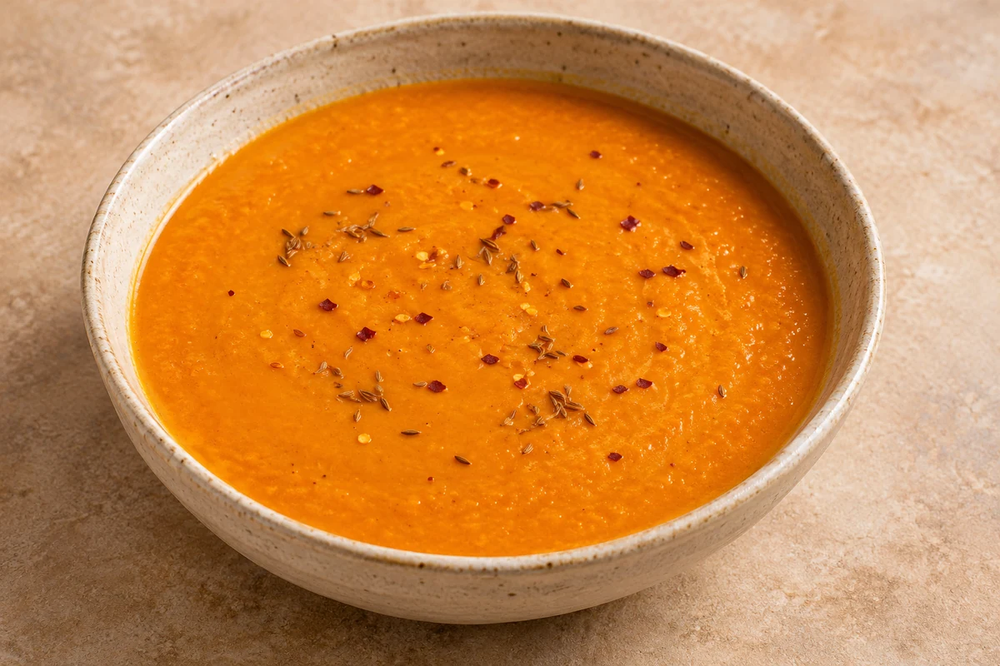

Soups
Spiced Carrot & Lentil Soup
A warming carrot and red lentil soup with toasted cumin and a gentle chilli kick. Quantities below default to 2 servings; adjust the slider as needed.
Prep10 mins
Cook20 mins
people
Ingredient quantities update automatically

Ingredients
Method
Toast the spices
Heat a large saucepan and dry-fry 1 tsp cumin seeds with a pinch of chilli flakes for 1 minute, or until they start to jump around the pan and release their aromas.Add the vegetables and liquid
Scoop out about half the toasted spices with a spoon and set aside. Add 1 tbsp olive oil, 300 g coarsely grated carrots, 70 g split red lentils, 500 ml hot vegetable stock and 62.5 ml milk to the pan. Bring to the boil.Simmer
Simmer for 15 minutes, until the lentils have swollen and softened.Blend
Blend with a stick blender until smooth, or leave chunky if you prefer. If using a food processor, let the soup cool slightly first and blend in small batches according to the appliance instructions.Season
Season to taste. Sprinkle over the reserved toasted cumin seeds and chilli flakes.